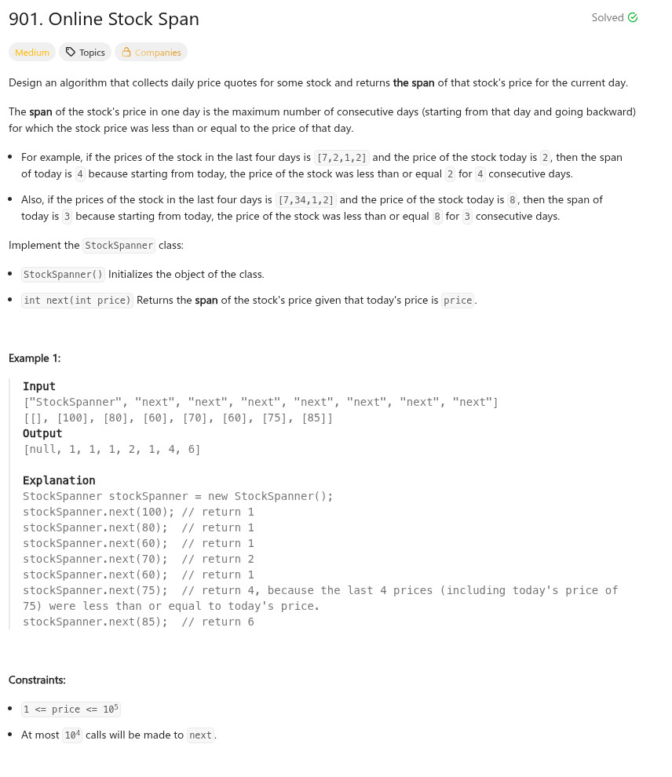

題目：

typedef struct {
int *s;
int pos;
} StockSpanner;
StockSpanner* stockSpannerCreate()
{
StockSpanner *r = calloc(1, sizeof(StockSpanner));
r->s = calloc(10000, sizeof(int));
return r;
}
int stockSpannerNext(StockSpanner* obj, int price)
{
int i = 0;
int j = 0;
int r = 0;
obj->s[obj->pos++] = price;
for (i = obj->pos - 1; i >= 0; i--) {
if (obj->s[i] <= price) {
r += 1;
continue;
}
break;
}
return r;
}
void stockSpannerFree(StockSpanner* obj)
{
free(obj->s);
free(obj);
}
/**
* Your StockSpanner struct will be instantiated and called as such:
* StockSpanner* obj = stockSpannerCreate();
* int param_1 = stockSpannerNext(obj, price);
* stockSpannerFree(obj);
*/